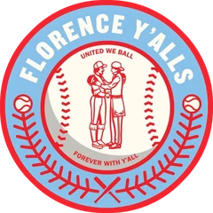

Low Minors · RF
Cedrick Harris
- Team
- Florence Yalls
- Organization
- Savannah Bananas
- Position
- RF
- Bats/Throws
- R/R
- Height/Weight
- 6'2", 190 lb
- Born
- Nov 14, 1977 in Texarkana, TX
- Age
- 24
- Uniform
- #66
2002 batting
| Team | Lg | G | PA | AB | R | H | 2B | 3B | HR | RBI | BB | K | SB | AVG | OBP | SLG | OPS |
|---|---|---|---|---|---|---|---|---|---|---|---|---|---|---|---|---|---|
| YALL | Low Minors | 15 | 64 | 58 | 14 | 24 | 6 | 1 | 3 | 9 | 5 | 11 | 5 | .414 | .453 | .707 | 1.160 |
2002 batting, advanced
| Team | Lg | PA | Pit/PA | SH | SF | HBP | IBB | GIDP | CS | OPS+ | ISO | BABIP | BB% | K% | WPA | UBR | WAR |
|---|---|---|---|---|---|---|---|---|---|---|---|---|---|---|---|---|---|
| YALL | Low Minors | 64 | 3.59 | 0 | 1 | 0 | 0 | 0 | 1 | 191 | .293 | .467 | 7.8% | 17.2% | 0.74 | -1.8 | 1.1 |
Streaks
Longest hitting streak: 6 games (Apr 10 to May 13); current: 6
Longest on-base streak: 6 games (Apr 10 to May 13); current: 6
Batting splits
| Split | G | PA | AB | R | H | 2B | 3B | HR | RBI | BB | K | SB | AVG | OBP | SLG | OPS | ISO | BABIP | BB% | K% |
|---|---|---|---|---|---|---|---|---|---|---|---|---|---|---|---|---|---|---|---|---|
| vs LHP | 7 | 15 | 14 | 3 | 4 | 1 | 0 | 0 | 0 | 1 | 3 | - | .286 | .333 | .357 | .690 | .071 | .364 | 6.7% | 20.0% |
| vs RHP | 14 | 49 | 44 | 11 | 20 | 5 | 1 | 3 | 9 | 4 | 8 | - | .455 | .490 | .818 | 1.308 | .364 | .500 | 8.2% | 16.3% |
| Home | 9 | 38 | 32 | 10 | 16 | 3 | 1 | 2 | 7 | 5 | 5 | 3 | .500 | .553 | .844 | 1.396 | .344 | .538 | 13.2% | 13.2% |
| Road | 6 | 26 | 26 | 4 | 8 | 3 | 0 | 1 | 2 | 0 | 6 | 2 | .308 | .308 | .538 | .846 | .231 | .368 | 0.0% | 23.1% |
By month
| Month | G | PA | AB | R | H | 2B | 3B | HR | RBI | BB | K | SB | AVG | OBP | SLG | OPS | ISO | BABIP | BB% | K% |
|---|---|---|---|---|---|---|---|---|---|---|---|---|---|---|---|---|---|---|---|---|
| April | 14 | 59 | 53 | 13 | 23 | 5 | 1 | 3 | 9 | 5 | 11 | 4 | .434 | .475 | .736 | 1.210 | .302 | .500 | 8.5% | 18.6% |
| May | 1 | 5 | 5 | 1 | 1 | 1 | 0 | 0 | 0 | 0 | 0 | 1 | .200 | .200 | .400 | .600 | .200 | .200 | 0.0% | 0.0% |
Situational
| Situation | PA | AB | H | 2B | 3B | HR | RBI | BB | K | AVG | OBP | SLG | OPS |
|---|---|---|---|---|---|---|---|---|---|---|---|---|---|
| Bases empty | 43 | 40 | 13 | 4 | 1 | 2 | 2 | 3 | 9 | .325 | .372 | .625 | .997 |
| Runners on | 21 | 18 | 11 | 2 | 0 | 1 | 7 | 2 | 2 | .611 | .619 | .889 | 1.508 |
| Runners in scoring position | 15 | 13 | 8 | 0 | 0 | 1 | 7 | 1 | 2 | .615 | .600 | .846 | 1.446 |
| RISP, two outs | 8 | 8 | 6 | 0 | 0 | 1 | 6 | 0 | 0 | .750 | .750 | 1.125 | 1.875 |
| Innings 1-3 | 27 | 24 | 9 | 4 | 1 | 1 | 3 | 2 | 5 | .375 | .407 | .750 | 1.157 |
| Innings 4-6 | 20 | 18 | 10 | 2 | 0 | 2 | 5 | 2 | 2 | .556 | .600 | 1.000 | 1.600 |
| Innings 7-9 | 16 | 15 | 5 | 0 | 0 | 0 | 1 | 1 | 4 | .333 | .375 | .333 | .708 |
| Extra innings | 1 | 1 | 0 | 0 | 0 | 0 | 0 | 0 | 0 | .000 | .000 | .000 | .000 |
Situational splits are rebuilt from every plate appearance in the export (base/out state when the PA began). "RBI" counts runs batted in on that PA.
2002 batting game log
| Date | Opp | Score | Pos | Bat | PA | AB | R | H | 2B | 3B | HR | RBI | BB | K | SB | CS | HBP | GIDP | WPA |
|---|---|---|---|---|---|---|---|---|---|---|---|---|---|---|---|---|---|---|---|
| May 13 | @BaRo | L 2-5 | RF | 1 | 5 | 5 | 1 | 1 | 1 | 0 | 0 | 0 | 0 | 0 | 1 | 0 | 0 | 0 | -0.027 |
| Apr 15 | @Fred | L 4-9 | CF | 1 | 1 | 1 | 0 | 1 | 1 | 0 | 0 | 0 | 0 | 0 | 0 | 0 | 0 | 0 | 0.084 |
| Apr 14 | vsStLuc | L 8-9 | CF | 1 | 6 | 3 | 2 | 1 | 0 | 0 | 0 | 1 | 2 | 1 | 0 | 0 | 0 | 0 | -0.027 |
| Apr 13 | vsStLuc | L 1-11 | CF | 1 | 3 | 3 | 1 | 2 | 0 | 1 | 0 | 0 | 0 | 0 | 1 | 0 | 0 | 0 | 0.094 |
| Apr 12 | vsStLuc | W 7-6 | CF | 1 | 5 | 4 | 2 | 4 | 0 | 0 | 0 | 1 | 1 | 0 | 1 | 0 | 0 | 0 | 0.210 |
| Apr 10 | vsNHPr | W 7-6 | PH | 9 | 1 | 1 | 0 | 1 | 0 | 0 | 0 | 0 | 0 | 0 | 0 | 0 | 0 | 0 | 0.024 |
| Apr 9 | vsNHPr | L 1-3 | CF | 1 | 4 | 4 | 0 | 0 | 0 | 0 | 0 | 0 | 0 | 1 | 0 | 0 | 0 | 0 | -0.097 |
| Apr 8 | vsNHPr | W 6-0 | CF | 1 | 5 | 5 | 1 | 2 | 0 | 0 | 1 | 4 | 0 | 1 | 0 | 0 | 0 | 0 | 0.237 |
| Apr 7 | @CaTw | W 5-1 | CF | 1 | 5 | 5 | 0 | 1 | 0 | 0 | 0 | 0 | 0 | 3 | 0 | 0 | 0 | 0 | -0.047 |
| Apr 6 | @CaTw | L 5-8 | CF | 1 | 5 | 5 | 1 | 0 | 0 | 0 | 0 | 0 | 0 | 2 | 0 | 0 | 0 | 0 | -0.106 |
| Apr 5 | vsLkEr | W 6-0 | CF | 1 | 5 | 4 | 2 | 2 | 0 | 0 | 1 | 1 | 1 | 1 | 1 | 0 | 0 | 0 | 0.096 |
| Apr 4 | vsLkEr | L 2-6 | CF | 1 | 5 | 5 | 1 | 3 | 2 | 0 | 0 | 0 | 0 | 1 | 0 | 1 | 0 | 0 | 0.064 |
| Apr 3 | vsLkEr | W 10-6 | CF | 1 | 4 | 3 | 1 | 1 | 1 | 0 | 0 | 0 | 1 | 0 | 0 | 0 | 0 | 0 | 0.020 |
| Apr 2 | @Queb | W 6-1 | CF | 1 | 5 | 5 | 2 | 5 | 1 | 0 | 1 | 2 | 0 | 0 | 1 | 0 | 0 | 0 | 0.268 |
| Apr 1 | @Queb | L 2-6 | CF | 1 | 5 | 5 | 0 | 0 | 0 | 0 | 0 | 0 | 0 | 1 | 0 | 0 | 0 | 0 | -0.055 |
2002 fielding by position
| Team | Lg | Pos | G | GS | Inn | TC | PO | A | E | DP | FPct | ZR | Arm | Framing | SB | CS | CS% | PB |
|---|---|---|---|---|---|---|---|---|---|---|---|---|---|---|---|---|---|---|
| YALL | Low Minors | CF | 12 | 12 | 103.0 | 35 | 35 | 0 | 0 | 0 | 1.000 | 0.2 | 1.7 | - | - | - | - | - |
| YALL | Low Minors | RF | 1 | 1 | 8.0 | 2 | 2 | 0 | 0 | 0 | 1.000 | 0.1 | 0.0 | - | - | - | - | - |
ZR (zone rating), Arm and Framing are OOTP's runs-above-average figures. SB/CS/CS% are base stealers against him as a catcher.
Career batting
| Year | Team | Lvl | G | PA | AB | R | H | 2B | 3B | HR | RBI | BB | K | SB | AVG | OBP | SLG | OPS | WAR |
|---|---|---|---|---|---|---|---|---|---|---|---|---|---|---|---|---|---|---|---|
| 2000 | ROSE | A | 34 | 144 | 129 | 27 | 34 | 6 | 4 | 0 | 14 | 12 | 29 | 10 | .264 | .329 | .372 | .701 | 0.4 |
| 2001 | ElPa | AA | 16 | 52 | 49 | 4 | 10 | 1 | 0 | 1 | 4 | 2 | 15 | 1 | .204 | .231 | .286 | .516 | -0.1 |
| 2001 | GUAD | A | 84 | 355 | 319 | 63 | 88 | 13 | 1 | 6 | 34 | 26 | 77 | 21 | .276 | .333 | .379 | .713 | 1.1 |
| 2002 | YALL | Low Minors | 15 | 64 | 58 | 14 | 24 | 6 | 1 | 3 | 9 | 5 | 11 | 5 | .414 | .453 | .707 | 1.160 | 1.1 |
Seasons before 2002 are the player's real-life record, listed under the franchise that holds that history in this universe. "Top level" totals count major-league-level seasons only.
Service time & contract status
- Service time
- 0.000 (0 days; 0 this season)
- Status
- Pre-Arb
- Arbitration
- Not projected
- Free agency
- Not projected
- Options
- 0 used, 3 remaining (of 3)
No projection: no major-league service yet and not on an MLB, ABL or FBL roster.
Service time is Y.DDD: major-league service years plus days toward the next year (172 days = 1 year, from the league rules). Status follows the league rules: under 3 years Pre-Arb, 3 to 5 years Arb 1/2/3, 6+ years FA-eligible. The export's arbitration_offering is 0 and no player has gone through arbitration yet (has_received_arbitration is 0 for everyone), so these statuses come from the rules, not from hearings. Projected years assume a full major-league season of service every year from 2002 on.
Injury history (2002)
| Date | Expected days out | Day-to-day | Setbacks |
|---|---|---|---|
| Apr 15 | 28 | No | 0 |
Most frequent matchups pitchers he has faced
| Pitcher | AB | H | HR | AVG |
|---|---|---|---|---|
| Luis Huerta | 4 | 4 | 1 | 1.000 |
| Efrain Valdez | 4 | 1 | 0 | .250 |
| Juan Manuel Palafox | 4 | 0 | 0 | .000 |
| Kason Gabbard | 4 | 0 | 0 | .000 |
| Francisco Rivera | 3 | 2 | 0 | .667 |
| Mark Harriger | 3 | 2 | 1 | .667 |
| Dan Denham | 3 | 2 | 0 | .667 |
| Edgar Perez | 3 | 1 | 0 | .333 |
| Wes Anderson | 3 | 1 | 1 | .333 |
| Mark Thompson | 3 | 0 | 0 | .000 |
| Dennis Springer | 3 | 0 | 0 | .000 |
| Ismael Ramirez | 2 | 2 | 0 | 1.000 |
| Zach McClellan | 1 | 1 | 0 | 1.000 |
| Doug Slaten | 1 | 1 | 0 | 1.000 |
| Gary Majewski | 1 | 1 | 0 | 1.000 |
News wire 1 headline
Headlines from the in-game OOTP news feed. The export carries subject lines only, no story text; game headlines link to the box score.
- Low Minors 5 Hits for Yalls Harris Box score